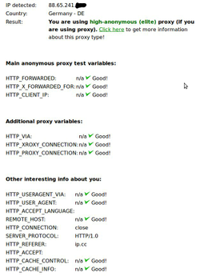

Tinyproxy
Dieser Artikel wurde für die folgenden Ubuntu-Versionen getestet:
Ubuntu 17.10 Artful Aardvark
Ubuntu 16.04 Xenial Xerus
Ubuntu 14.04 Trusty Tahr
Zum Verständnis dieses Artikels sind folgende Seiten hilfreich:
 Tinyproxy
Tinyproxy  ist ein HTTP-Proxyserver. Tinyproxy wurde von Grund auf als schneller, kleiner und voll funktionsfähiger Proxyserver für den Einsatz auf Systemen mit geringen Systemressourcen entwickelt. Der Speicherbedarf bewegt sich im Bereich von 2 MiB, und die CPU-Last erhöht sich linear je nach Anzahl der gleichzeitigen Verbindungen. Daher kann Tinyproxy auch auf älteren Geräten oder als eingebettete Lösung auf Linux-betriebenen Routern ohne merkliche Leistungseinschränkung eingesetzt werden.
ist ein HTTP-Proxyserver. Tinyproxy wurde von Grund auf als schneller, kleiner und voll funktionsfähiger Proxyserver für den Einsatz auf Systemen mit geringen Systemressourcen entwickelt. Der Speicherbedarf bewegt sich im Bereich von 2 MiB, und die CPU-Last erhöht sich linear je nach Anzahl der gleichzeitigen Verbindungen. Daher kann Tinyproxy auch auf älteren Geräten oder als eingebettete Lösung auf Linux-betriebenen Routern ohne merkliche Leistungseinschränkung eingesetzt werden.
Tinyproxy ist freie Software und steht unter der GNU General Public License (GPL) zur Verfügung. Die Quellen werden von Banu Systems Private Limited in Chennai, Indien gepflegt.
Eigenschaften¶
Besonders auf dem lokalen PC oder im Heimnetzwerk kann Tinyproxy seine Vorteile ausspielen. Sein geringer Ressourcenbedarf und hohe Konfigurierbarkeit sowie seine Filter- und Anonymisierungs-Einstellungen bieten sehr viele Möglichkeiten. Auch in Verbindung mit Tor und weiteren Inhaltsfiltern lässt er sich hervorragend einsetzen. Tinyproxy kann auf Wunsch als transparenter Proxy konfiguriert werden, damit jede weitere Client-Konfiguration entfällt.
Tinyproxy enthält einige Einstellungen, die die Privatsphäre im Internet erhöhen. Hierbei kann keine hundertprozentige Anonymität gewährleistet werden. Typische HTTP-Header werden verschleiert oder unterbunden, womit den Datensammlern eine Wiedererkennung erschwert wird.
Installation¶
Tinyproxy ist in den offiziellen Paketquellen enthalten. Zur Installation benötigt man folgendes Paket [1]:
tinyproxy (universe)
 mit apturl
mit apturl
Paketliste zum Kopieren:
sudo apt-get install tinyproxy
sudo aptitude install tinyproxy
Konfiguration¶
Die Konfiguration erfolgt über eine gut dokumentierte Konfigurationsdatei. Diese ist bereits so eingestellt, dass Tinyproxy ohne weiteres Zutun als transparenter Proxy im lokalen Netzwerk und auf dem lokalen PC eingesetzt werden kann. Die Konfigurationsdatei wird in der Datei /etc/tinyproxy.conf abgelegt. Die Datei kann mit einem bevorzugten Editor [2] und Root-Rechten [3] bearbeitet werden. Die Konfigurationsdatei enthält zeilenweise Optionsschalter. Optionen werden mit einer vorangestellten Raute '#' deaktiviert.
Dienst starten¶
Nach der Installation wird Tinyproxy automatisch als Dienst gestartet. Nach Änderungen an der Konfiguration muss der Dienst neu gestartet werden.
sudo /etc/init.d/tinyproxy restart
Zugriff¶
Der Proxyzugriff wird für definierte Schnittstellen oder bestimmte Subnetze eingestellt. So kann der Zugriff auf den Proxyserver von einzelnen Geräten oder dem lokalen Netzwerk konfiguriert werden. Ferner kann der Zugriff von extern über IP-Adressen oder Adressbereichen eingestellt werden. Diese Einstellungen werden in der Konfigurationsdatei im Abschnitt "Allow" definiert:
Beispiel für den lokalen PC:
# Allow: Customization of authorization controls. If there are any # access control keywords then the default action is to DENY. Otherwise, # the default action is ALLOW. # # The order of the controls are important. All incoming connections are # tested against the controls based on order. # Allow 127.0.0.1 #Allow 192.168.0.0/16 #Allow 172.16.0.0/12 #Allow 10.0.0.0/8
Beispiel für das lokale Netzwerk hinter einem Router:
# Allow: Customization of authorization controls. If there are any # access control keywords then the default action is to DENY. Otherwise, # the default action is ALLOW. # # The order of the controls are important. All incoming connections are # tested against the controls based on order. # #Allow 127.0.0.1 Allow 192.168.0.0/16 #Allow 172.16.0.0/12 #Allow 10.0.0.0/8
Der verwendete Port, auf dem der Proxyserver den Netzwerkverkehr entgegen nimmt, wird in dem Abschnitt "Port" eingestellt. Standardmäßig ist der Port auf 8888 eingestellt.
Sichtbar¶
Ein transparenter Proxy wird mit "DisableViaHeader" sichtbar gemacht. Dazu muss die entsprechende Zeile mittels # auskommentiert werden:
# DisableViaHeader: When this is set to yes, Tinyproxy does NOT add # the Via header to the requests. This virtually puts Tinyproxy into # stealth mode. Note that RFC 2616 requires proxies to set the Via # header, so by enabling this option, you break compliance. # Don't disable the Via header unless you know what you are doing... # #DisableViaHeader Yes
Zusammen mit der Option im Abschnitt "ViaProxyName" wird dann der angegebene Proxyname dargestellt. Bei fehlenden Eintrag in Gänsefüßchen wird der Rechnername als Proxyname angezeigt.
# ViaProxyName: The "Via" header is required by the HTTP RFC, but using # the real host name is a security concern. If the following directive # is enabled, the string supplied will be used as the host name in the # Via header; otherwise, the server's host name will be used. # ViaProxyName "tinyproxy"
Unsichtbar¶
Ein Unsichtbarer (Elite) Proxy wird im Abschnitt "DisableViaHeader" verborgen. Hier nochmal der Hinweis, dass das Aktivieren den RFC-Standards widerspricht.
# DisableViaHeader: When this is set to yes, Tinyproxy does NOT add # the Via header to the requests. This virtually puts Tinyproxy into # stealth mode. Note that RFC 2616 requires proxies to set the Via # header, so by enabling this option, you break compliance. # Don't disable the Via header unless you know what you are doing... # DisableViaHeader Yes
Filter¶
Im Abschnitt "Filter" wird der Speicherort der Filterdatei definiert. Die Filterdatei ist eine einfache Textdatei, die Begriffe oder URLs pro Zeile enthält. Die eingetragenen Filter dürfen auch als Regulärer Ausdruck eingetragen werden. Weiter kann definiert werden, ob die angegebenen Begriffe oder URLs Groß- und Kleinschreibung berücksichtigen. Ferner wird festgelegt, ob die Filter als Ausschlussfilter (Blacklist) oder Einschlussfilter (Whitelist) behandelt werden.
# Filter: This allows you to specify the location of the filter file. # #Filter "/etc/filter" # # FilterURLs: Filter based on URLs rather than domains. # #FilterURLs On # # FilterExtended: Use POSIX Extended regular expressions rather than # basic. # #FilterExtended On # # FilterCaseSensitive: Use case sensitive regular expressions. # #FilterCaseSensitive On # # FilterDefaultDeny: Change the default policy of the filtering system. # If this directive is commented out, or is set to "No" then the default # policy is to allow everything which is not specifically denied by the # filter file. # # However, by setting this directive to "Yes" the default policy becomes # to deny everything which is _not_ specifically allowed by the filter # file. # #FilterDefaultDeny Yes
Anonymisierung¶
Im Abschnitt "Anonymous" können Optionen zum Verschleiern einiger HTTP-Browserdaten eingestellt werden. Hierbei werden diese Schalter erst in Verbindung mit der Proxy-Art sinnvoll. Sobald eine Option aktiviert ist, wird der angegebene HTTP-Wert verschleiert. Wenn keiner der HTTP-Werte aktiviert ist, werden alle Browserdaten weitergereicht. Werden ein oder mehrere der anderen HTTP-Werte aktiviert, so werden nur die aktivierten HTTP-Werte obfuskiert. Der "Host"-Wert obfuskiert alle HTTP-Browserdaten des Hosts.
# Anonymous: If an Anonymous keyword is present, then anonymous proxying # is enabled. The headers listed are allowed through, while all others # are denied. If no Anonymous keyword is present, then all headers are # allowed through. You must include quotes around the headers. # # Most sites require cookies to be enabled for them to work correctly, so # you will need to allow Cookies through if you access those sites. # Anonymous "Host" #Anonymous "Authorization" #Anonymous "Cookie" ## Optional '' ## #Anonymous "Accept" #Anonymous "User-Agent" #Anonymous "Connection" #Anonymous "Accept-Language" #Anonymous "Accept-Encoding" #Anonymous "Cache-Control" #Anonymous "If-Modified-Since" #Anonymous "If-None-Match" #Anonymous "DNT"
JavaScript¶
JavaScript kann und wird nicht unterbunden. Wenn JavaScript im Browser aktiv ist, werden Browserdaten übermittelt.
|  |
| Unsichtbarer (Elite) Proxy |
Verwendung¶
Beim eingesetzten Webbrowser müssen folgende Einstellungen vorgenommen werden:
HTTP-Proxy:
localhostPort:
8888
Systemübergreifend¶
In Unity und Gnome wird über "Systemeinstellungen -> Netzwerk" im Menüpunkt "Netzwerk-Proxy" der Proxy eingetragen. Anschließend wird der Proxy mit der Schaltfläche "Systemweit anwenden" System übergreifend übernommen. Hier werden ebenfalls folgende Werte eingetragen:
HTTP-Proxy:
localhostPort:
8888
Testen¶
Folgende Webseiten können genutzt werden, um die Proxy-Konfiguration und deren Auswirkungen zu überprüfen:
Links¶
Tinyproxy – ein einfacher HTTP Proxy Daemon
 - Blogbeitrag zur Konfiguration, 03/2010
- Blogbeitrag zur Konfiguration, 03/2010Whitelist with Tinyproxy and Firehol
- AnwendungsbeispielServerdienste
 weitere Proxyserver
weitere Proxyserver
- Erstellt mit Inyoka
-
 2004 – 2017 ubuntuusers.de • Einige Rechte vorbehalten
2004 – 2017 ubuntuusers.de • Einige Rechte vorbehalten
Lizenz • Kontakt • Datenschutz • Impressum • Serverstatus -
Serverhousing gespendet von